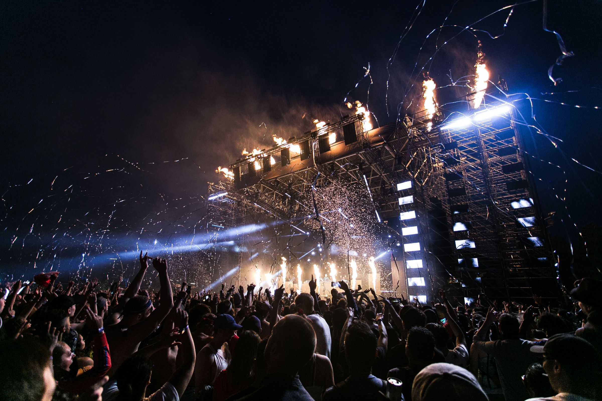
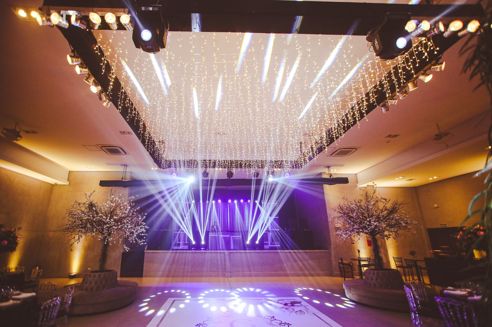
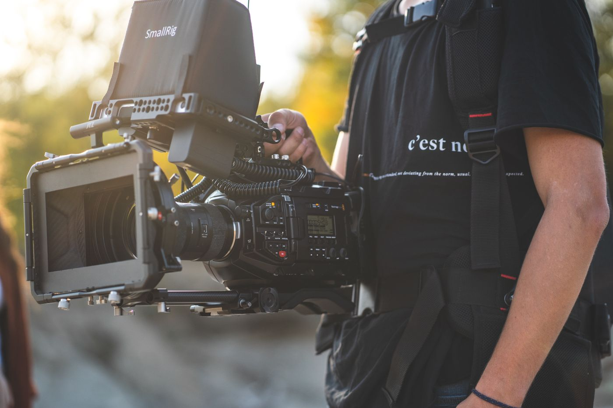
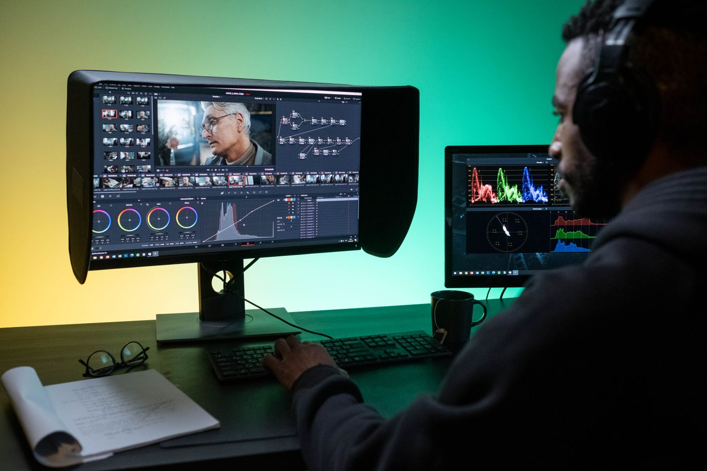
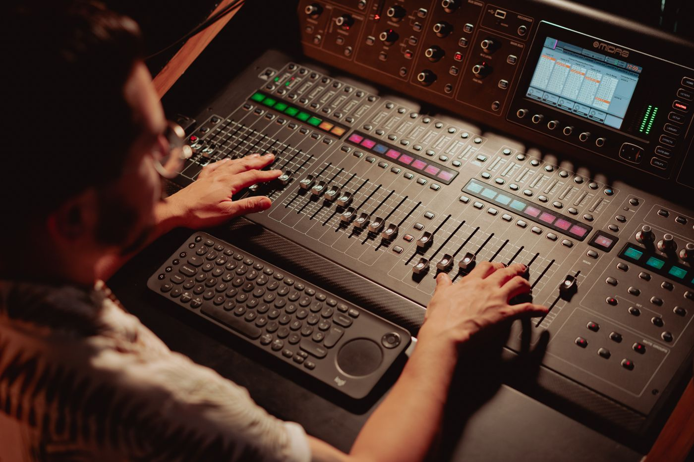

从现场，到每一块屏幕SCROLL TO EXPLORE
RESCAN LIVE PRODUCTION01 / LIVE EXPERIENCES
每个现场，都值得看见。
赛事的速度，舞台的情绪，观点的交锋。
用合适的转播方式，呈现不同现场。
展示全部 3 类转播场景
02 / ABOUT US
专注现场。
连接每一刻。
现场只有一次，
每一次切换、每一路声音，
都值得提前准备、认真对待。
我们专注转播与直播制作，围绕赛事、演出、会议和品牌活动，统筹机位、导播、声音、字幕与信号输出，让现场内容清楚、连贯地呈现在观众面前。
从前期踏勘、技术方案到现场联排与正式直播，我们与主办方、场地方和执行团队协同工作。根据活动流程、现场网络及播出平台，制定适合项目的制作与备份方案。
周密筹备现场协同清晰呈现
03 / WHAT WE DO
从机位，到播出。
拍摄、导播、包装、推流，围绕现场协同。
01转播方案与筹备
PLANNING & REHEARSAL
根据活动流程、场地条件与播出需求，规划机位、人员、信号链路和现场网络。通过技术联调与流程彩排，提前确认每个环节的衔接。
现场踏勘 / 机位规划 / 信号测试 / 流程联排
02多机位拍摄与导播
MULTICAMERA PRODUCTION
统筹全景、特写与现场细节，配合声音采集和导播切换，准确传递活动节奏。按项目需求协调现场大屏与直播画面输出。
多机位拍摄 / 实时切换 / 音频接入 / 现场大屏
03字幕包装与精彩回放
GRAPHICS & REPLAY
将活动标题、人物信息、议程与赛事信息融入直播画面。根据比赛节奏配置精彩回放，让观众看清关键过程，理解现场变化。
字幕条 / 比分与信息图文 / 精彩回放 / 片头片尾
04信号推流与录制交付
STREAMING & RECORDING
按平台要求配置直播信号，开展推流测试与播出监看，并结合现场条件制定备份方案。直播结束后，按约定交付录制文件与精彩片段。
平台推流 / 信号监看 / 备份规划 / 录制交付